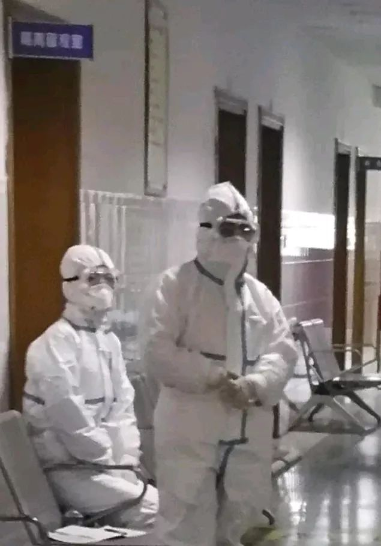
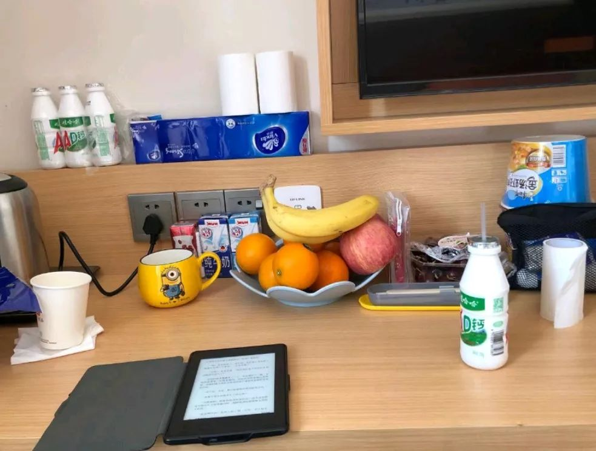

在人间丨妈妈在武汉隔离病房去世
原文链接 备份链接 联系上倩倩是腊月二十九。当天上午10点，武汉因新型冠状病毒肺炎封了城。她很焦急，她母亲和父亲被隔离在不同的医院，母亲严重，父亲轻微。哥哥也确诊了，但医院不接收，自己在一个酒店房间隔离。她担心虚弱的妈妈在病房里缺少照料。 …

“

- 疫 情 之 下 -
看到爸爸如此坚强的内心和乐观的心理状态，我也充满了信心。
”
故 事 练 习 生 习 作
第 58 篇
1月20日晚间，钟南山院士对“新型肺炎人传人”的一句肯定，让全国各地陷入对病毒感染的无限恐慌之中。一时之间，所有药房的口罩、酒精几乎售罄，武汉“封城”，举国闭门，人人自危。
疫情爆发，恰逢春节前夕。虽然漫天都是疫情报道，但这依然冲不散我回家过年的喜悦。小年夜的傍晚，吃过晚饭，我坐在公寓的地板上一边哼着曲儿收拾行李，一边美滋滋盘算着这次回家一定要大吃一通。
然而，这一切和平美好的小幸福，在我接到妈妈的一个电话之后，支离破碎。
故事时间：2020.1.20—至今
故事地点：上海
1
“小Y！你爸爸被隔离住院了！”
接到妈妈的电话，是在21日的午后。那天阳光不错，站在办公室的落地窗前，十几摄氏度的气温，把人晒得浑身懒懒洋洋。但此时，听到这个噩耗的我却止不住浑身发冷。
“怎么回事？不是小感冒吗？”我有点焦急。
“开始有发热症状了，你爸1月初去过武汉。医院怀疑可能是……”
消息来得太突然，我的思维还停留在昨晚：不是说小感冒不打紧吗？依稀记得，妈妈明明昨晚还笑爸爸嫌弃输液室的环境不好，非要她把晚饭拿到车上去吃。
等等！他们在车上一起吃了晚饭？
“妈妈你怎么样？有哪儿不舒服吗？”
“我也被隔离了。就在你爸病房的对面。”不出意外，妈妈也进去了。
彼时，武汉肺炎“人传人”的消息才过两天，尽管口罩坐地起价，武汉消息满天飞，但我万万没想到，疫情竟离我们如此之近。
当天下午，医院传来了消息，爸爸的核酸检测为阳性，成为该市确诊第一例。
我原本打算除夕当天一早返程，无奈爸爸坚持不让我回去：“你回来干什么？我和你妈妈都在医院，家里人都没有，你还不如就在那儿待着给我们省省心。”
爸爸强硬的态度不容拒绝，考虑再三，为了安慰家中的老人，也为了躲避春运高峰、保护自身安全，我退掉了好不容易定点抢到的高铁票，对爷爷奶奶谎称外面事态严重，高铁危险系数太大，这次就不聚在一起吃年夜饭了，等疫情过去了再好好一起吃一吃。
吃不吃我不知道，但这个年，我注定过不好了。
自那天起，我坚持每天和妈妈视频电话，还给爸爸写了一封长长的信，感谢爸爸拼搏和坚定信念的精神，这么多年一直影响着自己，让自己也成长为和他一样优秀聪明努力的人。
为了保持自己情绪的稳定，我每天和朋友CC保持通话。尽管生活按部就班地继续着，但我知道，自己内心的压力与煎熬，压得我快喘不上气了。
除夕就要来了，尽管疫情仍在扩散，年还是要过，饭也要吃。我原以为这已经是最糟糕的情况，却不想这只是噩梦的开始。

2
“小Y，医院那边下了转院通知，你爸爸情况好像不太好了。”
就在卫健委通告全国这次疫情杀伤力远不如2003年的非典时，我们收到医院通知：爸爸转重症了，必须尽快送XX医院和其他患者一起集中治疗——因为那里集中了全省最好的专家团队。
但这也意味着，爸爸和妈妈要分开了。
这些天，这对患难夫妻即使都被隔离着，但因为知道对方就在身边，就在离自己对面不到10米开外的地方，心上总算是有寄托的。俩人互相依赖着，才能坚持到今天。
“我妈现在情绪有点崩溃，我爸也不想去那个医院。”我很难受，给医院打了电话，想尽可能帮助爸妈。
果不其然，对于分开这件事，即使夫妻双方都是拒绝的，医院的态度也是强硬的。
医生把转院告知书的图片传给了我。
我终于知道为什么妈妈如此恐惧——因为告知书上面赫然写着“重症、呼吸衰竭、请家属知悉”等信息。这些字眼亮晃晃的扎得人眼疼，谁也不知道转院后的情况——爸爸一个人转过去行吗？有人能照顾好他吗？这么多病人一起治疗，会不会交叉感染？
尽管恐惧，但我们心里清楚，不转，也许就是等死。
没有更好的办法，爸爸最后还是转院了。
妈妈继续留在医院隔离观察，但渐渐也陆续出现了咳嗽、发热的迹象。为了减缓症状，增强免疫力，医生开始给她用药，希望能控制病情的发展。
一个人的日子总是难熬一些。
就这样，除夕夜到了。
3
这个春节过得简简单单，全国人民难得的默契，夜空中干干净净，没有什么礼花。
除夕夜，我去朋友家一起包了饺子，三鲜馅的饺子很可爱，趁着饺子下锅的时候，我高兴地传了几张照片给CC，展示自己第一次优秀的包饺技术。

坎坎坷坷，终于也算是吃了顿热腾腾的年夜饭。
朋友们也陆续知道了我家的事，看到我终于能打起精神努力生活的样子，有点心疼，也放心了些。
大年初五的早晨，医院传来了一个好消息：妈妈核酸检测为阴性，可以出院了！和妈妈通完电话后，我迫不及待和CC分享了这个消息：“特别高兴！我感觉自己这么多天的坚持终于有了价值！”
那个上午，我们聊了很久，聊疫情结束之后的旅行计划，哪里的海更蓝，哪里的建筑更迷人；聊回家后要好好抱抱爸妈，甚至还互相分享吐槽了这些天如何更快更有效地在各大APP线上抢蔬菜水果的心得。
我的身心太久没放松下来，听到自己久违的高昂的语调声，觉得自己又活了过来。
“妈妈今天就回家了，但还是需要在家自我隔离14天，不能出门。他们年前就进了医院，现在家里什么都没有，一点儿物资都没准备。”
考虑到现实生计问题，我们暂时中断了天马行空的畅聊，联系了离家住的比较近的小姨。一番沟通后，小姨自告奋勇提出，隔离期间妈妈的饭由她负责。
挂了电话，我打开房间的窗户，几缕光线从云隙中洒下来，下了几天的雨终于停了。
所有的事情都在往好的方向发展。
4
淅淅沥沥的雨，停了一天又开始下起来。天有点阴沉。2月的第一天深夜，我接到了医院的电话。
“你好，是XX吗？我是XX医院的，是你爸爸XXX的主治医生。我们很遗憾地告知你，目前患者情况不太乐观。我们讨论考虑需要换一种治疗方式，可能要增加用药量，不排除上呼吸机的可能，治愈后也可能仍留有部分后遗症。对于治疗方式的更换，我们需要家属签字同意。”
一天没联系，医生的语气很疲惫。
“好的，我考虑一下给您回电。”我不自觉握紧了手机，听到自己回复的声音，礼貌且平静。
其实我有点害怕。我不知道回去后，等待我的是怎样的现实，或者说直接是结局？
但现实情况不允许我犹犹豫豫，尽管家人们还是反对，但作为女儿，我真心希望自己不要做出今后也许会后悔的决定。
工作可以请假，现在也不是春运高峰，仔细做好防护工作，我坚信，两小时的飞行还是可行的。
也许回去是内心挣扎已久的想法，想通后，我马上打开手机查看最近的航班。
“你先联系医院，回去后想办法见一面主治医生，虽然我们不懂医疗，情况还是要了解清楚的。还有，你妈妈在家隔离，委托授权书也一起准备好吧。”
我把情况告诉了CC，她尽可能想为我多考虑一些情况，多做好一些准备，这样回去后不会太过慌乱。
“回去后先去见医生，口罩多备几个，及时换新。一定要保护好自己。”
“我们等你回来。加油。”
“加油。”
第二天，我搭上了回家的飞机。望着窗外的天空，我想，即使困难重重，陪在家人身边，做好一切后盾，坚定信念，就是我最大的力量。

5
两小时后，我顺利下机。
我见到了这几天一直辛苦送饭送水果的小姨，简单了解情况后，小姨送我到了爸爸的医院。医院的防控措施非常严格，私家车只能开到院门口，一下车，一群医护人员对着我们和车内喷洒酒精。
小姨不是直系亲属，不能进院。我一个人走进了医生办公室，谈了近一小时后，我在患者家属谈话记录上签了字，并同意了更换治疗方法。
但是我没有见到病房中的爸爸，也没有见到在家隔离中的妈妈。
忙完一切后，我在距离家两条街道的酒店办理了入住。疫情爆发后，家乡的疫情比我工作的城市更为严重。酒店没有开业，只剩几个干净的房间，和经理沟通了情况后，酒店答应给我提供住宿，但是没有清扫服务，一切自理。
“这样也好，现在和越多的人接触，危险就越多一分。“CC觉得这反而是个好事，这样大家都安全。
“是的，我现在刚刚进房间，刚去超市买了些水果吃的。”放下了购物袋，我接着说道：“我和医生沟通过了，爸爸的情况确实不太好，开始有并发症了。我们现在在和其他医院调配，条件允许的话，可能开始要用抗肺纤维化药物。”

我把刚签字的谈话记录确认书传给了CC。尽管情况确实不如想象的乐观，但是一回到这里，我的内心终于如释重负，轻松了许多。
事发前，我和爸爸几乎不怎么说话，也很少沟通。回来后，我每天和爸爸发微信，鼓励他要坚强，虽然他常常只回复我一两个字，但我心里踏实多了。
虽然他身体上承受着巨大的痛苦，但只要身体好一点，能在床上坐起来，他就开始办公了。他说：“现在不是个人如何，而是一些社会责任使然。”
我了解到，这次疫情对餐饮旅游业影响比较大。他打算公司在手续费、通道费及扣点上对商户上半年全免，员工的工资也必须要保障落实。这虽然也加重了公司的压力，但我们绝不能在这时候把员工推向社会，造成更大的不稳定。”
爸爸是在我读书时就自己创业做公司的，平时工作很忙。这次武汉出差后，来不及做出任何决策，就临时被隔离带到医院。疫情爆发后，人心惶惶，我没想到爸爸即使身处ICU，还心系员工与社会，也许这就是中国企业家的社会责任使然。从爸爸身上，我学到的不只是拼搏，耐心，还有使命感。
“爸爸心里是开心的，他在做他想做的事情。这么久以来，我们都劝他要多休息，想吃什么，却忽视了他内心的需求。爸爸讲出那番话后，我突然明白，不仅仅是生理，我们更要关注他内心的感受变化。”看到爸爸如此坚强的内心和乐观的心理状态，我也充满了信心。
保持着巨大的耐心和责任，2月8号，医院传来消息，爸爸终于病情有了好转，不需要24小时戴着呼吸机了。
医生说，这意味着他的肺功能在逐渐恢复了。
我特别高兴，那一天晚饭都多盛了一碗。
截止目前，爸爸的核酸检测仍为阳性，淋巴细胞等生理指数也不达标，依然是ICU的重症患者。但总体情况，已然比年前好了许多。
回想这一段曲折的经历，我想起爸妈从小就把我送到国外念书，遇事也很少帮我解决，他们有事也不会告诉我。尤其是爸爸，印象中总是埋头努力做着事业，为我提供很好的物质基础，其余一切都靠自己。
我想，这次疫情结束后，也许我们的相处模式依然少言寡语。但通过这次成长，我更理解了为人父母的心，与他们无私奉献的品质。这种奉献，不止对我，这也是对公司、对社会的坚持。
我们知道，中国爸爸的情感颗粒度是非常粗糙的，他们不沟通，不说话，不解释。但却常常会在背后尽自己最大努力，为我们提供最安全美好的世界。
因为，这就是他们表达父爱的方式。
（本文系朋友口述采写。）
-END-
- 我 是 故 事 练 习 生 -
作者 | CC，青年作者。
题图|《流感》剧照
华中科技大学出版社·武汉战“疫”数博馆
抗击新型冠状病毒感染肺炎疫情作品资料正在征集中——
【征集要求】
＊来稿应为未公开发表和出版的内容，题材不限，
VLOG、文字、图片等均可，务必客观真实，
反映疫情当下的民生现况及个人见闻；
＊提供作品者都将获得华中科技大学出版社提供的“宅家悦读大礼包”；
＊作品一旦录用，将提供完整规范的版权保护。
【投稿方式】
音视频：2279281426@qq.com
文字：423322329@qq.com
图片：454578039@qq.com
或点击下方链接直接投稿
http://2019ncov.xiushewang.com/
请务必留下真实姓名及详细联系方式。
“我故”故事练习生培养计划，详情请戳：

About us
主编：鹿｜本期编辑：鹿
Contact us
投稿/商务合作/咨询
微信后台留言 or 邮箱：wmsygsdr@163.com
**我们是有故事的人｜华中科技大学出版社官方故事平台**
原文链接 备份链接 联系上倩倩是腊月二十九。当天上午10点，武汉因新型冠状病毒肺炎封了城。她很焦急，她母亲和父亲被隔离在不同的医院，母亲严重，父亲轻微。哥哥也确诊了，但医院不接收，自己在一个酒店房间隔离。她担心虚弱的妈妈在病房里缺少照料。 …
原文链接 备份链接 **记者/佟晓宇 ** 编辑/石爱华 宋建华 刘畅穿上防护服，进入隔离室 离开一岁多的孩子，刘畅上了“前线”，给儿子自然离乳的计划，没办法实现了。 刘畅是一名耳鼻喉科的护士，她所在的医院是武汉市第一批收治新冠肺炎患者的 …
原文链接 备份链接 ***采访&撰稿 | 严青*** 排版 | 博雅 在武汉封城的时候，有一群身患肿瘤的孩子，也因此留在了城里。他们需要面对的不仅是疫情，还有肿瘤治疗中的种种困境。 从1月23日起到现在，封城已接近一个月的时间。这 …
原文链接 备份链接 澎湃新闻记者 李文姬 曹宇泽给“抗疫”一线的爸爸写信 本文图均为 受访者供图 曹宇泽今年11岁，是名小学六年级的学生。他的爸爸曹志刚是三峡大学附属仁和医院急诊重症医学科主任。 疫情来袭，曹志刚第一批报了名，成为医院专家 …
原文链接 备份链接 涂俊南（大家喜欢叫他小涂，乐队 “丢莱卡” 的主唱）的捐助日志在大年三十那天晚上出现在朋友圈。如往年，他没回去跟家里人过春节，独自留在北京。他原本计划三月份回去南昌陪陪父母，因为疫情爆发，今年大概是回不去了。 一个人在 …